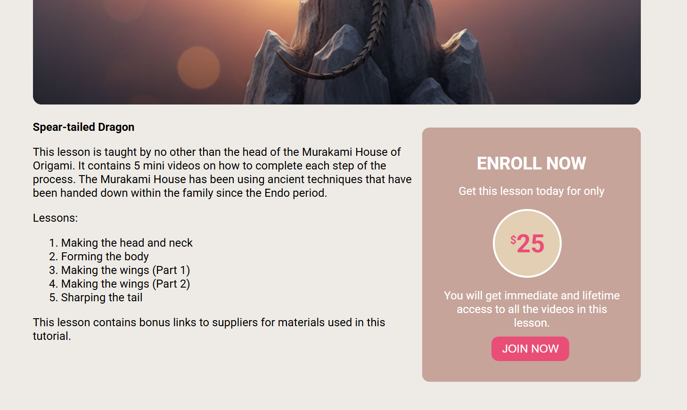
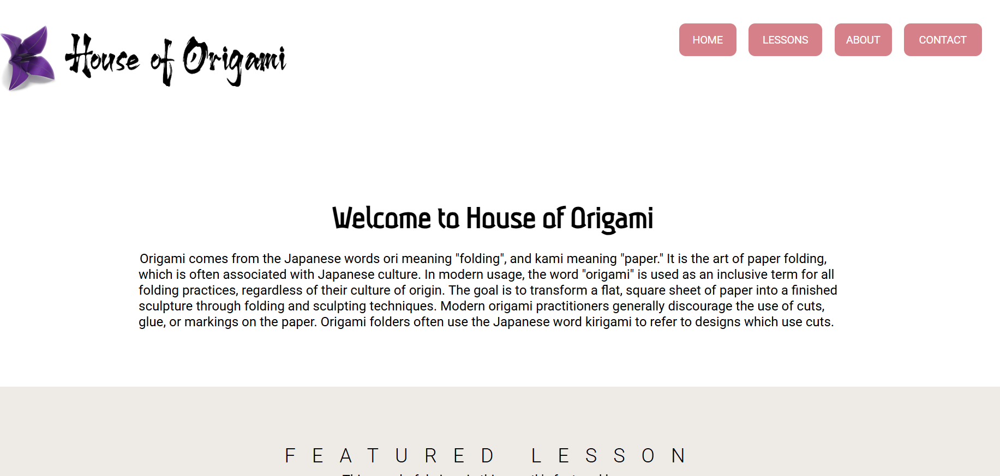
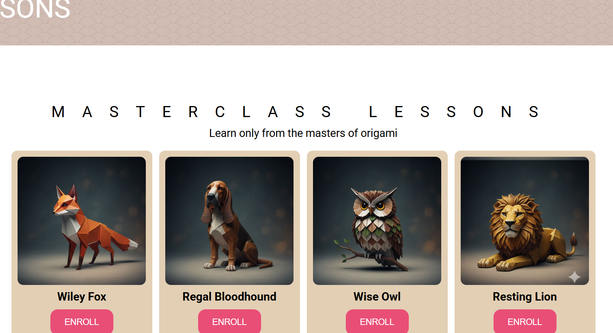
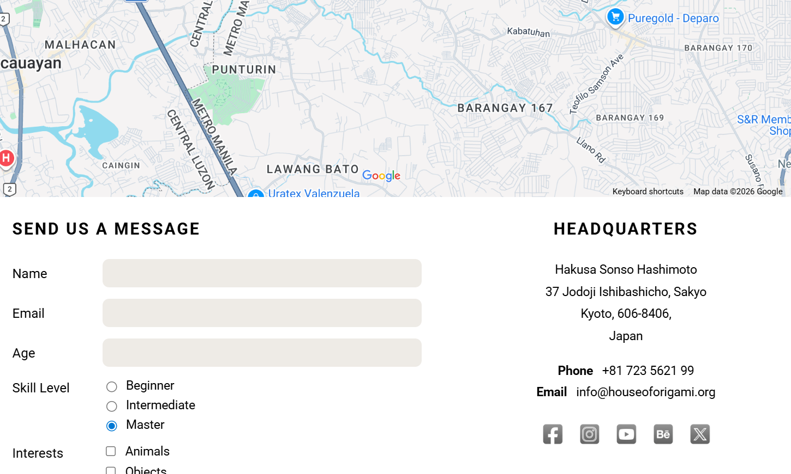

Web Development
House of Origami




OVERVIEW
A multi-page educational platform designed to bring the ancient art of Japanese paper folding into the digital age. The project focuses on creating an intuitive user experience for hobbyists and master-level practitioners alike, blending cultural heritage with modern web design principles.
KEY FEATURES
- Curated Learning Paths: A structured "Masterclass" section featuring specialized lessons like the Wiley Fox and Resting Lion, each with dedicated enrollment modules.
Interactive Lesson Layouts: Detailed course pages (e.g., the Spear-tailed Dragon) that break down complex processes into digestible video steps and provide resource links for materials.
Responsive Contact System: A functional "Send Us a Message" interface that categorizes users by skill level and interest, ensuring personalized engagement.
Geographic Integration: A visual headquarters section featuring embedded map data to ground the brand in its Kyoto-based roots.
WHAT I LEARNED
- Semantic HTML5 Structure: I focused on writing clean, organized code. By using semantic tags, I ensured the site isn't just visually appealing but also accessible and easy to navigate for all users.
Form Logic & Layout: Designing the "Send Us a Message" section taught me how to handle user input layouts—balancing radio buttons, text fields, and checkboxes within a clean, intuitive interface.
Responsive Contact System: This project was a "Desktop First" mindset. I learned how to use breakpoints to ensure that the complex Masterclass grid and the Lesson details remain perfectly readable and functional on a desktop or a smartphone.
TOOLS USED
HTML
CSS
LINK
lkp,